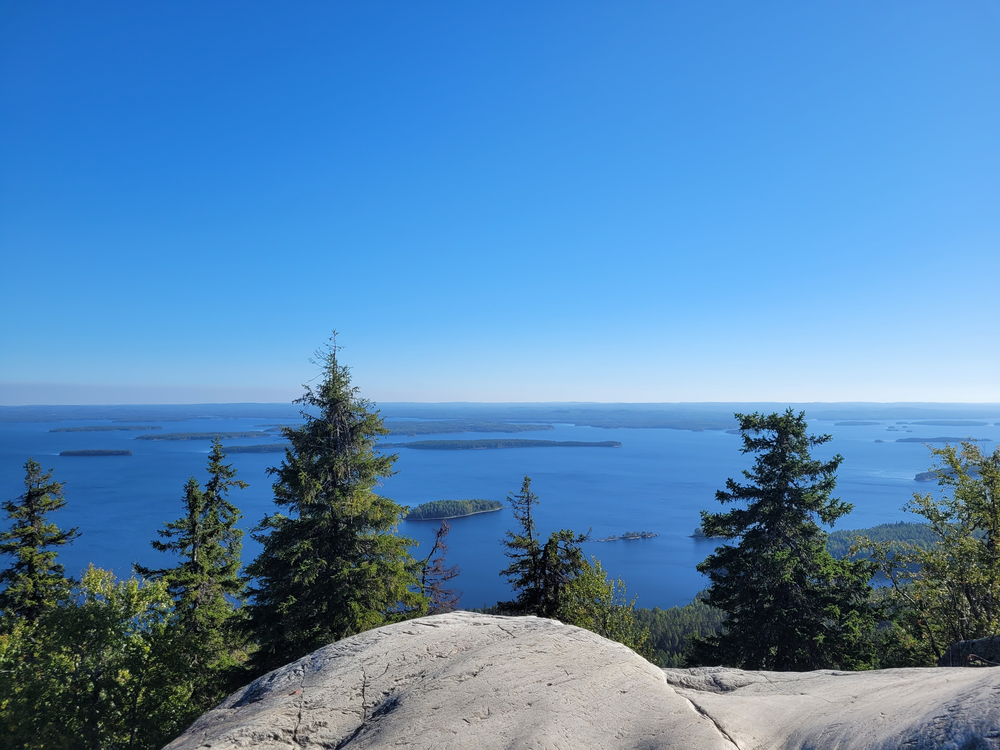

Suomi on ainutlaatuinen yhdistelmä villiä luontoa, eläviä kaupunkeja ja unohtumattomia elämyksiä. Täällä voit hengittää maailman puhtainta ilmaa, vaeltaa upeissa kansallispuistoissa ja pulahtaa kirkasvetisiin järviin - kesällä auringon paistaessa lähes ympäri vuorokauden ja talvella revontulten tanssiessa taivaalla. Mutta Suomi ei ole vain luontoa. Se on myös innovatiivista designia, rikasta historiaa ja makumatka, joka yllättää niin perinteisillä herkuilla kuin moderneilla makuelämyksillä. Olitpa etsimässä rauhaa tai uusia seikkailuja, Suomessa odottaa kokemus, jota et löydä mistään muualta.
Jyväskylä
Jyväskylä on kaupunki, jossa moderni arkkitehtuuri ja Järvi-Suomen upeat maisemat kohtaavat. Alvar Aallon suunnittelemat rakennukset kertovat kaupungin designperinteestä, kun taas Päijänteen rannat ja vehreät ulkoilureitit kutsuvat luontoon. Vilkas opiskelijakaupunki sykkii kulttuuria, tapahtumia ja elävää kahvila- ja ravintolakulttuuria ympäri vuoden.

Tampere
Tampere hurmaa yhdistämällä elävän kaupunkikulttuurin, upeat järvimaisemat ja rennon tunnelman. Historialliset punatiiliset tehdasrakennukset kertovat kaupungin teollisesta perinnöstä, kun taas modernit museot, kahvilat ja tapahtumat tuovat siihen raikasta nykypäivää. Olitpa herkkusuu, kulttuurin ystävä tai luontoelämyksiä etsivä, Tampereella riittää koettavaa jokaisena vuodenaikana.

Hossa
Hossa on luonnonystävän unelmakohde, jossa kirkasvetiset järvet, jylhät harjumaisemat ja muinaiset kalliomaalaukset luovat ainutlaatuisen tunnelman. Tämä kansallispuisto tarjoaa loistavat mahdollisuudet patikointiin, melontaan ja kalastukseen - ja rauhan, jota ei kaupunkien hälinässä löydä.

Koli
Koli on Suomen kansallismaisema parhaimmillaan. Upeat näkymät Pieliselle, jylhät vaarat ja vuodenaikojen mukaan vaihtuva luonto tekevät siitä täydellisen kohteen niin aktiivilomailijoille kuin rauhaa etsiville. Oli kyseessä sitten vaellus, hiihto tai vain luonnon ihailu, Kolin maisemat tarjoavat elämyksiä, jotka jäävät mieleen pitkäksi aikaa.
Turku
Turku on Suomen vanhin kaupunki ja kulttuurin kehto. Aurajoen rannat, historiallinen Turun linna ja modernit museot tarjoavat monipuolisia elämyksiä. Turku on myös tunnettu vilkkaasta ravintola- ja kahvilakulttuuristaan sekä tapahtumistaan, jotka houkuttelevat kävijöitä ympäri vuoden.

Helsinki
Helsinki on Suomen pääkaupunki, jossa yhdistyvät moderni arkkitehtuuri, merelliset maisemat ja vilkas kaupunkielämä. Kaupungin monipuoliset museot, designliikkeet ja ravintolat tarjoavat elämyksiä jokaiseen makuun. Helsinki on myös portti Suomen saaristoon ja tarjoaa upeita mahdollisuuksia merellisiin seikkailuihin.